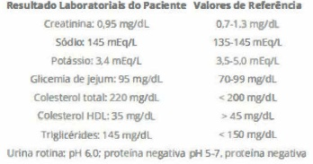

Questão 2 · Hiperaldosteronismo · Hiperaldosteronismo primário · Cardiologia · 4000183195Mulher, 40 anos de idade, tem diagnóstico de hipertensão arterial há 5 anos e faz uso de losartana 100 mg/dia, hidroclorotiazida 25 mg/dia e amlodipina 5 mg/dia. Traz MRPA com médias de PA de 152/96 mmHg. Exame físico: PA 150/90 mmHg, FC 70 bpm; IMC 23 kg/m²; sem outras alterações. Exames laboratoriais: creatinina = 0,7 mg/dL (VR 0,6- 1,2), potássio = 3,0 mEq/L (VR 3,5-5,5), sódio = 138 mEq/L (VR 135-145). Qual é a investigação inicial mais adequada para estabelecer a etiologia da hipertensão arterial?
A Dosagem de aldosterona plasmática e atividade da renina plasmática.
B Dosagem de cortisol sérico após 1 mg de dexametasona.
C Dosagem de cortisol em urina de 24 horas em 3 amostras.
D Tomografia computadorizada de abdome com protocolo para feocromocitoma.
Questão 3 · Cardiologia · Hipertensão renovascular · 4000182831Paciente de 37 anos apresentou quadro de hipertensão arterial diastólica (125/100 mmHg) em revisão anual com ginecologista. Eco-Doppler de artérias renais mostrou estenose > 60% na artéria renal direita. Qual a etiologia mais provável e qual o tratamento adequado?
A Displasia fibromuscular – tratamento clínico com anti-hipertensivos
B Displasia fibromuscular – angioplastia de artéria renal
C Aterosclerose – angioplastia com implante de
D Aterosclerose – tratamento clínico com anti-hipertensivos
Questão 4 · Síndrome da Apneia Obstrutiva do Sono · Síndrome da apnéia e hipopnéia obstrutiva do sono SAHOS · 4000181666Cardiologia Homem de 44 anos chega para consulta acompanhado da esposa, a qual reclama que ele ronca muito à noite. Ao nal da avaliação, o médico explica que o diagnóstico provável é de apneia obstrutiva do sono. A orientação do pro ssional deve ser de que tal condição é fator de risco para
A sinusopatia.
B hipertensão arterial sistêmica.
C pneumonia.
D asma brônquica.
E doença pulmonar obstrutiva crônica.
Questão 5 · Avaliação clínica e exames complementares · Cardiologia · Conceituação e epidemiologia · 4000181554A Hipertensão Arterial (HA) é uma das principais causas de doença no mundo, afetando mais de 1 bilhão de indivíduos e causando cerca de 9,4 milhões de mortes a cada ano. Avalie as a rmativas seguintes sobre a HA e assinale como verdadeira (V) ou falsa (F). I. Os acidentes vasculares cerebrais (AVC) são frequentes nos hipertensos, e cerca de 85% deles são hemorrágicos. II. Pacientes com HA que apresentam hipertro a ventricular esquerda (HVE) têm maior risco de cardiopatia isquêmica, AVC, insu ciência cardíaca e morte súbita. O controle terapêutico agressivo da hipertensão pode regredir ou reverter a HVE e reduzir o risco de cardiopatia. III. O rim é tanto um alvo como uma causa de hipertensão. A macroalbuminúria (razão aleatória albumina / creatinina urinária > 10 mg/g) é um marcador precoce de lesão renal. IV. Nos pacientes com hipertensão maligna, a encefalopatia hipertensiva está relacionada com falha da autoregulação do fluxo sanguíneo cerebral, resultando em vasodilatação e hiperperfusão. V.O sistema renina-angiotensina-aldosterona contribui para a regulação da pressão arterial primariamente por meio das propriedades vasodilatadoras da angiotensina II. e de excreção de sódio da aldosterona. A sequência correta é
A F, V, F, V, F
B V, V, F, F, V
C F, V, F, F, V
D F, F, V, V, F
E V, F, F, V, V
Questão 6 · Tratamento geral da crise hipertensiva · 4000176591Um homem com 64 anos de idade chega ao serviço de emergência, conduzido pelos familiares, por confusão mental e sonolência. O paciente tem história de hipertensão arterial sistêmica com difícil controle. Ao exame, apresenta edema de papila ao fundo de olho, pressão arterial (PA) de 220 x 130 mmHg, presença de 4ª bulha na ausculta cardíaca. O restante do exame físico não apresenta alterações. A tomografia de crânio sem contraste não evidenciou sinais de isquemia cerebral. O tratamento de primeira escolha a ser proposto para esse paciente é iniciar
A clonidina, via oral, com o objetivo de reduzir a PA em até 50% em 24 horas ou para uma PA na faixa de 140x90- 85 mmHg.
B nitroprussiato endovenoso com o objetivo de reduzir a PA em até 25% em 2 horas ou para uma PA na faixa de 160 x 100-110 mmHg.
C nitroglicerina endovenosa com o objetivo de reduzir a PA em até 25% em 2 horas ou para uma PA na faixa de 160 x 100-110 mmHg.
D captopril, via sublingual, com o objetivo de reduzir a PA em 50% em 8 horas ou para uma PA na faixa de 140x90- 85 mmHg.
Questão 7 · Diagnóstico · Feocromocitoma · Cardiologia · 4000167337Homem, 50a, procura atendimento em Unidade de Emergência por dor torácica associada a palpitações, tremores e sudorese. Refere episódios prévios semelhantes. Exame físico: PA= 222x124 mmHg; FC= 122 bpm; sudoreico; tremor de extremidades. Fundo de olho: cruzamentos patológicos e papila nítida. ECG: sobrecarga de ventrículo esquerdo. Troponina: normal. A HIPÓTESE DIAGNÓSTICA É:
A Dissecção aguda de aorta.
B Doença de Addison.
C Hipertensão maligna.
D Feocromocitoma.
Questão 8 · Hiperaldosteronismo · Hiperaldosteronismo primário · Cardiologia · 4000166567A hipertensão arterial sistêmica é uma doença prevalente nas sociedades, e aproximadamente 5% dos casos são relacionados a causas identificáveis. Para pesquisa de hiperaldosteronismo primário, os seguintes exames são úteis, exceto:
A Aldosterona plasmática.
B Catecolaminas urinárias.
C Atividade de renina plasmática.
D Potássio sérico.
Questão 9 · Cef aleias Secundárias · Tratamento da emergência hipertensiva em situações especiais · Neurologia · 4000166363Leia o caso clínico a seguir. Mulher de 75 anos dá entrada no pronto-socorro referindo intensa cefaleia associada a confusão mental, vômitos e sudorese. Ao exame, apresentava ritmo cardíaco regular, FC = 80 BPM e PA = 240x140 mmHg, em ambos os membros superiores. Nesse caso, qual é o diagnóstico mais provável?
A Enxaqueca.
B Acidente vascular cerebral.
C Infarto agudo do miocárdio.
D Emergência hipertensiva.
Questão 10 · Tratamento geral da crise hipertensiva · Cardiologia · 4000166311Mulher, 25 anos de idade, é atendida no PS com PA = 180/100 mmHg após ter utilizado cocaína. Nega comorbidades e não apresenta disfunções orgânicas. Qual é a droga de escolha para tratar essa urgência hipertensiva?
A Captopril.
B Nitroprussiato de sódio.
C Propranolol.
D Diazepam.
Questão 11 · Cardiologia · Hipertensão renovascular · 4000164041Mulher de 25 anos, sem comorbidades, compareceu à Unidade Básica de Saúde (UBS) para atendimento de rotina. Durante a consulta, o médico detectou níveis pressóricos de 160 x 110mmHg em membro superior direito e 150 x 100mmHg em membro superior esquerdo. Iniciou tratamento anti-hipertensivo com enalapril e solicitou alguns exames. Duas semanas depois, a paciente retornou com os seguintes resultados: hemoglobina = 12,8mg/dL, hematócrito = 38%, leucócitos = 4.600/mm³, plaquetas = 180.000/mm³, creatinina = 2,8mg/dL, ureia = 78mg/dL, sódio = 134meq/L, potássio = 5,8meq/L e fósforo = 2,2meq/L. Além disso, apresentou uma ultrassonogra a de rins e vias urinárias com o seguinte laudo: rins tópicos, com dissociação corticomedular preservada, sem cálculos ou dilatação pielocalicial, com medidas no maior eixo de 10cm (rim direito) e 9cm (rim esquerdo). A etiologia mais provável da hipertensão arterial é o(a):
A hiperaldosteronismo primário
B estenose de artéria renal
C hipertensão essencial
D doença renal crônica
Questão 12 · Edema Agudo Pulmonar · Cardiologia · 4000163655Homem de 70 anos, hipertenso de longa data, é admitido na emergência com dispneia aguda. Ao exame físico, apresenta pressão arterial de 220x120mmHg e crepitações pulmonares bilaterais em dois terços inferiores. Considerando o diagnóstico mais provável, quais medicamentos dentre os listados abaixo, devem ser prescritos, prioritariamente.
A Morfina e Dobutamina.
B Morfina e Nitroglicerina.
C Furosemida e Dobutamina.
D Furosemida e Nitroglicerina.
Questão 13 · Tratamento geral da crise hipertensiva · Tratamento da emergência hipertensiva em situações especiais · 4000153165Crise hipertensiva Uma mulher de 48 anos de idade é trazida por familiares à unidade de emergência de hospital de alta complexidade com quadro de confusão mental, cefaleia e amaurose bilateral. Segundo familiares, a paciente é portadora de hipertensão arterial sistêmica há 2 anos, vindo em investigação diagnóstica por ser classificada como hipertensão arterial resistente. Nas últimas 2 semanas, a paciente passou a não tomar seus fármacos anti-hipertensivos, em razão de acreditar que o tratamento não estava mais funcionando. Na véspera, a paciente começou a se queixar de cefaleia holocraniana, pouco responsiva a fármacos, além de turvação visual. No dia de hoje, a paciente tornou-se um pouco confusa e começou a se queixar de que não estava conseguindo enxergar nada, razão porque foi trazida, às pressas, à unidade de emergência. Ao exame físico, a paciente mostra-se confusa, sonolenta, atendendo com di culdade a algumas solicitações verbais. Sua pressão arterial (PA) encontra-se em 240 x 160 mmHg em ambos os membros superiores, enquanto a frequência cardíaca é de 96 bpm. Um sopro é auscultado no anco direito de seu abdome. Iniciado tratamento anti-hipertensivo intravenoso, a paciente é submetida a uma tomogra a computadorizada de crânio em que foram detectadas áreas hipodensas em regiões occipitais. A paciente é, então, encaminhada para realização de uma ressonância magnética de encéfalo que, na imagem pesada em T2, revela a presença de hiperintensidade de sinal nos lobos occipitais, sem limites muito bem definidos. Instituído o tratamento indicado, a paciente evolui com regressão completa dos déficits neurológicos previamente descritos. Acerca do tratamento da paciente em questão, pode-se afirmar que
A o alvo terapêutico no caso seria a normalização da pressão arterial em, no máximo, 2 horas.
B após compensação clínica, seria fundamental ressecar o tumor adrenal secretor presente à direita.
C nicardipina e labetalol por via intravenosa seriam excelentes escolhas farmacológicas para a redução da PA da paciente.
D em razão da presença de trombose da artéria basilar, deveria ser adicionada anticoagulação plena com heparina de baixo peso molecular.
Questão 14 · Crise hipertensiva · 4000171253A Encefalopatia Hipertensiva pode se apresentar com o quadro clínico descrito, corretamente, no item:
A Nunca com início insidioso, evoluindo com cefaleia holocraniana, náuseas ou vômitos.
B Com início insidioso, jamais evoluindo com cefaleia holocraniana, náuseas ou vômitos.
C Com início insidioso, evoluindo com cefaleia holocraniana, náuseas ou vômitos.
D Com início insidioso, evoluindo com cefaleia holocraniana e náuseas, porém nunca com vômitos.
Questão 15 · Classif icação · Tratamento geral da crise hipertensiva · Neurologia · 4000151655Paciente masculino deu entrada no serviço de emergência com queixa de cefaleia frontal, referida como enxaqueca. Ao exame físico apresentava-se com FG = 100 bpm-PA = 180x130 mmHg, exame neurológico normal, fundo de olho evidenciando papilas normais A1HO. Submetido a eletrocardiograma que evidenciou sobrecarga de câmaras esquerda. Assinale o diagnóstico e a conduta correta:
A O paciente apresenta-se em urgência hipertensiva, devendo receber medicação via oral (captopril) e com reavaliação ambulatorial precoce (em até 7 dias).
B O paciente apresenta-se em uma emergência hipertensiva, porque há lesão em órgão alvo, devendo receber medicação parenteral (nitroprussiato de sódio) e internação em enfermaria após estabilização.
C O paciente apresenta-se em uma emergência hipertensiva, porque há hemorragia em retina, devendo receber medicação parenteral (nitroprussiato de sódio) e internação em UTI.
D O paciente apresenta hipertensão arterial crônica e não se caracteriza urgência ou emergência hipertensiva, devendo ser liberado após medicação via oral (furosemida).
Questão 16 · Nef rologia · Nef ropatia diabética x Nef ropatia não diabética · 4000151648Paciente de 70 anos é atendido no ambulatório de Clínica Médica com queixa de cansaço aos grandes esforços há 2 meses Hipertenso e diabetico ha 18 anos, em uso de captopril 150mg/dia, Turosented 25mg/dja, atenolol 50mg/dia. insulina NPH 30:20:10 Ule Metformina 1700mg/dia. Com ele estão alguns exames realizados na Unidade Básica de Saúde há 15 dias: Hemoglobina = 9,6 g/dl (com VCM = 87 e HCM = 30); Urina EAS com densidade de 1014. ph 6. leucócitos 10000, eritrócitos 12000, proteína 4+/4+, hemoglobina ausente: Creatinina = 3,6 mg/dl. Potássio = 5,4.mEq/L, Albumina sérica 3,8 mg/dl. Pressão Arterial = 160x90 mmHg. FC = 78 bpm, FR = 20 ipm, Peso de 80kg. No exame físico chama a atenção o edema de membros inferiores, 2+14+. Assinale a alternativa correta em relação ao paciente.
A O paciente é um renal crônico com nefropatia diabética e a realização do fundo de olho é V importante para o diagnóstico.
B O paciente é um cardiopata com síndrome cardio-renal tipo 1 e a realização de cintilografia miocárdica é importante para o diagnóstico.
C O paciente é um renal crônico com doença renovascular e o ultrassom renal com doppler é importante para o diagnóstico.
D O paciente é um cardiopata com síndrome cardio-renal tipo 2 e a realização de ecocardiograma é importante para o diagnóstico.
Questão 17 · Tratamento · Tratamento geral da crise hipertensiva · Cardiologia · 4000147014Paciente masculino, 70 anos, hipertenso, diabético e obeso, dá entrada no pronto atendimento com quadro de dor torácica de início súbito há cerca de 2 horas, de forte intensidade, com irradiação para região dorsal. Na admissão, está com PA:200/110, FC:95bpm, FR:16ipm, SO2:95%, com ausculta cardíaca mostrando sopro aórtico sistólico +++/IV, pulsos periféricos assimétricos, nos e palidez cutânea com pele fria. Foi realizada tomogra a da aorta com contraste com diagnóstico de dissecção aguda de aorta. Sobre esse quadro, assinale a alternativa correta.
A O controle da dor do paciente deve ser feito com anti-inflamatório não esteroidal, como dipirona.
B O uso definitroprussiato de sódio deve ser iniciado imediatamente para controle pressórico em monoterapia.
C Deve-se iniciar anticoagulação do paciente.
D Deve-se ter como alvo o betabloqueio efetivo do paciente, com a FC oscilando entre 60 e 75.
E O tratamento inicial deve ser com administração de betabloqueadores por via endovenosa, visando diminuir a frequência cardíaca e a pressão arterial.
Questão 18 · Tratamento geral da crise hipertensiva · 4000147013Paciente, 65 anos, masculino, previamente hipertenso, em uso regular da medicação, é admitido no setor de urgência com quadro de aumento pressórico de forma rápida, associado à cefaleia holocraniana, vômitos e confusão mental. Nega demais sintomas associados, como febre. Na admissão, está com PA: 210/130mmHg, FC:60bpm, FR:14ipm, SO2:96% em ar ambiente. A respeito desse o quadro, é correto afirmar que
A deve-se considerar o diagnóstico de crise hipertensiva, com encefalopatia hipertensiva, e a meta é redução da PA média em 10 a 15% na primeira hora e até 25% no primeiro dia de tratamento.
B o diagnóstico é crise de migrânea, sendo o tratamento a analgesia forte e hidratação.
C o diagnóstico é hipertensão intracraniana e deve ser feita imediata punção de líquido cefalorraquidiano.
D devem ser feitos controle com medicação anti-hipertensiva via oral e solicitação de exames para análise de possível lesão de órgão-alvo.
E um dos diagnósticos diferenciais do quadro neurológico é hipertensão maligna e, nesse caso, deve ser feita ressonância para diferenciar etiologias.
Questão 19 · Tratamento geral da crise hipertensiva · Gota · 4000146336Homem de 64 anos de idade apresenta exacerbação de gota envolvendo o pé direito. Ele relata sua dor como 9 em 10, apesar de ter tomado naproxeno. Nega dor torácica, dispneia, cefaleia, alteração visual ou sintomas urinários. Não há outros antecedentes patológicos além de gota. Exame físico: alerta, orientado e consciente; afebril, eupneico, corado e anictérico; pressão arterial: 200 x 105 mmHg, pulso: 82 bpm e frequência respiratória: 16 ipm; cardiopulmonar: nada digno de nota; pulsos palpáveis e simétricos. Em relação ao caso clínico descrito, constitui uma a rmação correta acerca do manuseio inicial:
A iniciar anti-hipertensivo parenteral e solicitar internação na unidade de terapia intensiva.
B prescrever 100 mg de cetoprofeno parenteral e 0,6 mg de clonidina oral.
C prescrever colchicina, prednisona e captopril sublingual.
D prescrever 100 mg de tramadol intravenoso e 50 mg de captopril oral.
E não há indicação de medicação anti-hipertensiva nesse momento.
Questão 20 · Tratamento geral da crise hipertensiva · 4000146069Atualmente, várias opções terapêuticas medicamentosas estão disponíveis para o tratamento das Emergências Hipertensivas (EH). O fármaco anti-hipertensivo ideal para uso parenteral deve apresentar as seguintes características listadas abaixo, indique a errada.
A capacidade de reverter alterações fisiopatológicas envolvidas.
B rápido início de ação.
C curva dose-resposta imprevisível.
D mínimo ajuste de dosagem
Questão 21 · Crise hipertensiva · 4000146066Durante a abordagem da Emergências Hipertensivas (EH), o pro ssional deverá realizar a diferenciação entre emergência e urgência, fazendo o diagnóstico correto das diversas situações de EH, a m de selecionar a terapia mais adequada para cada Lesão de Órgão Alvo LOA.
A Isso é muito importante, pois o diagnóstico e o tratamento corretos podem evitar agravamento do quadro clínico decorrente da situação crítica.\
B Isso é muito importante, pois o diagnóstico e o tratamento corretos não evitam agravamento do quadro clínico decorrente da situação crítica.
C Isso não é importante, pois o diagnóstico e o tratamento incorretos podem evitar agravamento do quadro clínico decorrente da situação crítica.
D Isso é muito importante, pois o diagnóstico e o tratamento incorretos podem evitar agravamento do quadro clínico decorrente da situação crítica.
Questão 22 · Hipertensão renovascular · Hipertensão renovascular · 4000145995Mulher, 74 anos de idade, com antecedente de acidente vascular isquêmico há 8 anos, sem sequelas, com bom controle da pressão arterial, em uso de anlodipino 10 mg/dia. Em sua última consulta, apresentou diário de controle pressórico repleto de valores fora da meta, (valores de pressão arterial sistólica sempre em torno de 190 mmHg). A paciente negava qualquer mudança de dieta ou má aderência medicamentosa. Optou-se pela introdução de enalapril e hidroclorotiazida. Na consulta de retorno, após o uso das medicações, a paciente traz exames laboratoriais com creatinina = 2,8 mg/dL (valor prévio = 1,3 mg/dL); ureia = 196 mg/dL; K = 5,1 mEq/L. As condutas medicamentosa e diagnóstica para esta paciente devem ser, respectivamente:
A Início de alisquireno; ultrassonografia de abdome total.
B Suspensão do enalapril; ultrassonografia com doppler de artérias renais.
C Suspensão de hidroclorotiazida; ultrassonografia com doppler de artérias renais.
D Suspensão do enalapril; dosagem de renina e aldosterona plasmática.
Questão 23 · Hiperaldosteronismo · Hiperaldosteronismo · Hiperaldosteronismo primário · 4000144319Você trabalha como médico em uma unidade de saúde da família e atende um paciente caucasiano de 35 anos, previamente hígido, e que vem sofrendo episódios semanais de cefaleia occipital associados a níveis pressóricos elevados (PAS entre 160 e 180 mmHg, PAD entre 100 e 120 mmHg) nos últimos 3 meses. Vem em uso de losartana 50 mg 1x ao dia regularmente há 1 mês, tendo obtido discreta redução dos níveis pressóricos. No exame físico, você identi ca paciente em bom estado geral, com índice de massa corporal = 25, FC = 72bpm, PA = 182 x 122 mmHg, sem outras alterações. O paciente lhe traz os seguintes exames laboratoriais, colhidos na mesma semana da consulta. Resultados laboratoriais do paciente. Assinale entre as alternativas abaixo aquela que indica a melhor conduta para esse paciente.

A Troca da losartana por amlodipina 1 O mg/dia e solicitação de ultrassom doppler de artérias renais.
B Aumento da losartana para 100 mg/dia, associação de hidroclortiazida 25 mg/dia e solicitação de curva pressórica.
C Aumento da losartana para 100 mg/dia, solicitação de eletrocardiograma e ecocardiograma.
D Troca da losartana por amlodipina 1 O mg/dia, solicitação de aldosterona e atividade de renina plasmáticas.
Revisar: possível letra faltando em enunciado
Questão 24 · Síndrome da Apneia Obstrutiva do Sono · Síndrome da apnéia e hipopnéia obstrutiva do sono SAHOS · 4000144233Homem, 45 anos, portador de hipertensão arterial há 5 anos em tratamento com hidroclorotiazida, enalapril e anlodipino em doses máximas retorna para seguimento com onitorização ambulatorial da pressão arterial (MAPA). Queixa se de episódios de elevação de pressão arterial em domicílio, apesar da aderência ao tratamento farmacológico e não farmacológico, e nega uso de outras medicações. Exame físico sem alterações, PA: 143 x 91 mmHg, FC 73 bpm, peso de 80 kg, altura 1,6 m. MAPA (figura) com média das pressões em 24 horas de 135 x 86 mmHg. Qual a condição clínica mais provável neste caso?

A Síndrome da apneia obstrutiva do sono.
B Feocromocitoma.
C Estenose de artéria renal.
D Hipertireoidismo.
Questão 25 · Def inição · Cardiologia · 4000142750Em relação às emergências hipertensivas e condutas a serem adotadas é CORRETO afirmar:
A Emergências hipertensivas ou urgências hipertensivas têm-se lesões agudizadas de órgãos alvos e devem ser usadas preferencialmente medicações sublinguais.
B Emergências hipertensivas não têm lesão de órgão alvo, e na urgência hipertensiva tem-se lesões de órgãos alvos, mas em ambas situações devem ser usadas medicações parenterais.
C Emergências hipertensivas têm lesão de órgão alvo apenas em pacientes que já tem lesões crônicas em decorrências de uma hipertensão arterial de longa data e devem ser usadas medicações sublinguais.
D Na urgência hipertensiva têm-se lesões agudas de órgãos alvos e devem ser usadas medicações sublinguais ou parenterais.
E Emergência hipertensiva é quando há lesão aguda de órgão alvo e deve se usar preferencialmente medicações parenterais.
Questão 26 · Epidemiologia f isiopatologia e prognóstico · Cardiologia · 4000142744A prevalência da hipertensão na população adulta é de 20 a 44%, dependendo da região estudada; isso significa que há, no Brasil, 20 a 40 milhões de pacientes hipertensos. Em relação à conduta médica nos casos de Crise Hipertensiva, assinale a opção
A Emergência Hipertensiva: redução dos níveis tensionais de 20 a 25% e/ou da pressão arterial diastólica para 100 a 110 mmHg nas primeiras 2 h, sendo recomendado iniciar com medicamento parenteral em unidade de terapia intensiva.
B Urgência Hipertensiva: paciente pode ser tratado com medicamento VO isoladamente ou em associação, com o objetivo de reduzir a PA gradativamente, entre 24 e 48 h.
C Encefalopatia Hipertensiva: betabloqueadores e inibidores da enzima de conversão da angiotensina (captopril) VO.
D Isquemia Miocárdica: Betabloqueadores para diminuir a frequência cardíaca e a contratilidade ventricular, reduzindo o consumo miocárdico de oxigênio. Bloqueadores dos canais de cálcio de longa duração e os inibidores da enzima de conversão da angiotensina podem ser usados.
E Doença Hipertensiva Específica da Gravidez: Inibidores da enzima conversora da angiotensina (IECA) e bloqueadores dos receptores de angiotensina II (BRA II) estão formalmente indicados nessas pacientes.
Questão 27 · Tratamento da emergência hipertensiva em situações especiais · 4000137407Mulher, 59 anos, com encefalopatia hipertensiva é admitida com pressão arterial (PA) = 190 x 130mmHg. Iniciou-se nitroprussiato de sódio endovenoso e 30 minutos depois, PA = 160 x 110mmHg. A conduta mais adequada, neste momento, para esta paciente é:
A suspender o nitroprussiato de sódio.
B aumentar a dose definitroprussiato de sódio.
C diminuir a dose definitroprussiato de sódio.
D manter a dose definitroprussiato. de sódio
Questão 28 · Edema Agudo Pulmonar · 4000130286Mulher 60a, é atendida no domicilio pelo SAMU apresentando intensa falta de ar e tosse com expectoração clara há 20 minutos. Antecedentes pessoais: hipertensão arterial sistêmica e cardiopata em uso losartana, furosemida e AAS. Exame físico: PA= 240x130mmHg; FC= 115bpm; FR= 30irpm; pulmões: estertores crepitantes nas bases e campo médio. Realizada avaliação primária, suporte ventilatório, posicionamento adequado do paciente e acesso venoso. MEDICAMENTOSA A SEGUIR É:
A Nitroprussiato de sódio, clonidina e furosemida.
B Dinitrato de isossorbida, sulfato de morfina e furosemida.
C Nitroprussiato de sódio, sulfato de morfina e cedilanide.
D Dinitrato de isossorbida, nitroglicerina e digoxina.
Questão 29 · Outras causas endócrinas de hipertensão secundária · Hipertensão arterial induzida por medicamentos · 4000123483Hiperaldosteronismo primário Considere os conjuntos de fatores abaixo. I - Doença do parênquima renal, doença aterosclerótica e displasia fibromuscular de artéria renal; II. - Hipotireoidismo, hipoaldosteronismo e doença de Cushing; III. - Uso de anti-inflamatórios não esteroidais, descongestionantes nasais com vasoconstritores e antidepressivos tricíclicos; Quais deles são causa de hipertensão arterial sistêmica secundária?
A Apenas I
B Apenas II
C Apenas III
D Apenas I e III
E I, II e III
Questão 30 · Quadro Clínico · Quadro Clínico · Tratamento da emergência hipertensiva em situações especiais · 4000042228Um paciente de 75 anos apresenta-se na emergência, trazido pelos lhos, duas horas após notarem que o mesmo acordou pela manhã apresentando quadro de di culdade na fala, discreta sonolência, e aparente redução da força muscular no hemicorpo esquerdo, tendo sido visto sem essas alterações na noite anterior. O paciente é hipertenso e diabético, em uso de losartana, hidroclorotiazida e insulina NPH. Ao exame neurológico, você percebe que há redução de força no dimídio esquerdo, desvio de rima labial e fala desconexa. PA: 190 x 110mmHg, HGT: 287mg/dl e SO₂: 93% em ar ambiente. Foi submetido a tomogra a computadorizada de crânio, sem evidências de lesões hemorrágicas. Sobre esse caso clínico, assinale a alternativa CORRETA.
A A principal hipótese diagnóstica é Acidente Vascular Encefálico (AVE isquêmico, e a conduta inicial deve ser uso de trombolítico endovenoso, após correção da hiperglicemia com insulina e redução dos níveis pressóricos para abaixo de 185 x 110mmHg.
B Caso exista contraindicação ao tratamento trombolítico, deve-se reduzir os níveis pressóricos arteriais para 185 x 110mmHg e manter os níveis glicêmicos entre 200 e 250mg/dL.
C A principal hipótese diagnóstica é encefalopatia hipertensiva, e a conduta inicial deve ser nitroglicerina endovenosa, a fim de reduzir os níveis pressóricos em 25% do valor inicial.
D A principal hipótese diagnóstica é Acidente Vascular Encefálico (AVE isquêmico, e a conduta inicial deve incluir a realização de exames laboratoriais, controle glicêmico, uso de O2 para manter níveis de SO2 ≥ 95% e uso de heparina não fracionada.
Questão 31 · Coarctação de aorta · Coarctação da aorta · 4000014524Adolescente de 18 anos procura serviço médico por quadro de cansaço aos esforços, sem outras queixas. Nega emagrecimento, febre, tosse ou edema. Ao exame físico, observado sopro contínuo suave em região infra- clavicular esquerda, irradiando para região infra-escapular do mesmo lado. Ictus discretamente desviado para esquerda, ausência de turgência jugular. Pressão arterial no braço esquerdo de 144/ 88 mmHg e no braço direito de 142/86 mmHg. Pulsos radiais amplos e simétricos. Pulsos femorais presentes, embora com amplitude diminuída. Qual o principal diagnóstico diferencial para o caso?
A Estenose mitral.
B Transposição de grandes artérias.
C Coarctação de aorta pós-ductal.
D Membrana sub-aórtica.
E Comunicação inter-atrial.
Questão 32 · Hiperaldosteronismo primário · 4000014398Paciente masculino, de 32 anos de idade, negro, com diagnóstico de hipertensão aos 22 anos de idade. Em uso de enalapril 20 mg duas vezes por dia, hidroclorotiazida 25 mg uma vez por dia e anlodipina 10 mg uma vez por dia. Retorna para consulta ambulatorial com exames complementares. Creatinina: 1,0 mg/dL; uréia: 38 mg/dL; sódio: 138 mEq/L; potássio: 3,2 mEq/L; bicarbonato: 32 mEq/L. Ultrassonografia de vias urinárias normal. O diagnóstico mais provável é
A feocromocitoma.
B coarctação da aorta.
C estenose de artéria renal bilateral.
D hiperaldosteronismo primário.
E hipertensão arterial primaria.
Questão 33 · Classif icação · Tratamento geral da crise hipertensiva · 4000011458Homem, 60 anos de idade, hipertenso em tratamento irregular, procurou o pronto socorro devido a cefaleia intensa e escotomas. Exame clínico: bom estado geral, hidratado, corado, eupneico e orientado. PA = 210/128 mmHg, FC = 90 bpm. Fundo de olho mostrando cruzamentos arteriovenosos patológicos, artérias em o de cobre e papila bem delimitada. Bulhas cardíacas rítmicas sem sopros ou B3. Pulmões sem ruídos adventícios. Eletrocardiograma: ritmo sinusal com sobrecarga ventricular esquerda. Assinale a alternativa correta.
A O paciente apresenta urgência hipertensiva, devendo a pressão arterial ser reduzida com medicamentos via oral em 24 horas.
B O paciente apresenta urgência hipertensiva, sendo o tratamento ideal na chegada ao pronto socorro a administração definifedipina sublingual.
C O paciente apresenta emergência hipertensiva (encefalopatia hipertensiva), devendo a pressão arterial ser reduzida em 25% na primeira hora com administração definitroprussiato de sódio via endovenosa.
D Após a análise das enzimas cardíacas, os medicamentos indicados são furosemida e benzodiazepínicos via endovenosa.
E É fundamental realizar tomografia computadorizada de crânio para afastar doença neurológica.
Questão 34 · Edema Agudo Pulmonar · 4000003542Idoso, 81 anos, aposentado, admitido no Serviço de Emergência, com quadro de dispneia em repouso intensa, há 30 minutos, acompanhada de sudorese fria. Acompanhante refere que o paciente é portador de Hipertensão arterial sistêmica, em uso irregular de Enalapril 40mg/dia, e portador de Diabetes Mellitus tipo 2, sem uso de medicação. O paciente foi internado, há 6 meses, com quadro semelhante, permanecendo dois dias em Unidade de Terapia Intensiva. Nega tosse, dor precordial, síncope e outras queixas. Ao exame físico apresentava-se em regular estado geral, taquidispneico, fazendo uso de musculatura respiratória acessória, descorado +/4, sudoreico, acianótico, anictérico e afebril. FC: 117 bpm; PA 224x137 mmHg; FR: 40 ipm; SatO2: 87% AR: Creptos bilaterais até ápices pulmonares. ACV: Bulhas rítmicas e hipofonéticas, em 2 tempos, sem sopros. AB: plano, indolor, sem visceromegalias. Extremidades frias, sem edemas. Diante do caso clínico, qual o diagnóstico e qual fármaco NÃO é considerado um tratamento redutor da pré-carga?
A Embolia Pulmonar. Furosemida.
B Edema Agudo de Pulmão. Digoxina.
C Pneumotórax hipertensivo. Nitrato.
D Tamponamento cardíaco. Morfina.
E Edema agudo de pulmão. Nitrato.
Questão 35 · Hipertensão renovascular · 4000118125Exame considerado como padrão-ouro no diagnóstico da hipertensão renovascular:
A Ressonância nuclear magnética.
B Atividade de renina nas veias renais.
C Arteriografia.
D Cintilografia renal com captopril.
E Duplex-scan.
Questão 36 · Edema Agudo Pulmonar · 4000098501Faz parte do tratamento do edema agudo de pulmão hipertensivo, exceto:
A Morfina intravenosa.
B Beta-bloqueador.
C Oxigenioterapia.
D Diurético de alça.
E Inibidor de enzima cardioversora de angiotensina.
Questão 37 · Cardiologia · Hipertensão renovascular · 4000072982Mulher de 28 anos procura clínico devido à hipertensão arterial sistêmica que foi detectada pela ginecologista em exame anual de rotina. Não usa qualquer medicamento. Em consultas anteriores, sua pressão arterial sempre foi normal. Na consulta atual, veri cou-se PA = 160 x 100 mmHg, FC = 98 bpm e restante do exame físico normal, assim como o hemograma, creatinina, sódio, potássio, cloro e cálcio. Quanto à investigação de causa secundária, é correto afirmar que o(a):
A achado de potássio normal fala fortemente contra hiperaldosteronismo primário
B hipótese de síndrome de Cushing seria corroborada pelo achado de hipercalemia
C achado de um tumor no córtex da adrenal corrobora a hipótese de feocromocitoma
D aumento da creatinina após início de captopril corrobora a hipótese de hipertensão renovascular
Questão 38 · Tratamento da emergência hipertensiva em situações especiais · 4000046080Paciente sexo masculino, 54 anos, em pós-operatório de tromboplastia em sua perna direita. Dados vitais: FC:100bpm, PA 230/135mmHg, Sat O₂ 96% aa. Nas 4 horas seguintes, o paciente desenvolveu dor retroesternal irradiada para mandíbula. ECGs seriados evidenciaram alterações dinâmicas em onda T na parede lateral. Pressão arterial com nível mantido. Qual a conduta mais apropriada para tratamento da pressão arterial?
A Não tratar a pressão arterial até resolução da dor
B Uso de spray sublingual intermitente
C Reduzir pressão arterial urgentemente com medicação EV
D Uso de comprimido sublingual
Questão 39 · Distúrbios da tireóide · Síndrome da apnéia e hipopnéia obstrutiva do sono SAHOS · Feocromocitoma · 4000042975São causas de hipertensão arterial secundária, exceto:
A apneia obstrutiva do sono.
B insuficiência cardíaca.
C hipotireoidismo.
D feocromocitoma
Questão 40 · Hipertensão renovascular · 4000029673A Hipertensão renovascular tem como etiologia predominante a
A Doença fibromuscular.
B Embolia de artéria renal.
C Arterite de Takayasu.
D Dissecção de aorta afetando artérias renais.
E Arterosclerose.
Questão 41 · Tratamento geral da crise hipertensiva · 4000025316Homem de 49 anos procura atendimento de emergência por cefaleia. Refere história de revascularização miocárdica há 1 ano e nega dor precordial. Ao exame físico apresenta PA = 200x125mmHg sem 3' ou 4' bulha. O exame neurológico é normal. Qual é o diagnóstico mais provável e qual é a melhor conduta terapêutica para o caso?
A emergência hipertensiva; nitroglicerina intravenosa
B urgência hipertensiva; hidralazina intravenosa
C urgência hipertensiva; nitroprussiato de sódio intravenoso e administração de analgésico
D urgência hipertensiva; captopril oral e administração de analgésico
Questão 42 · Síndrome da apnéia e hipopnéia obstrutiva do sono SAHOS · 4000015895Mulher de 44 anos se queixa de dispneia aos esforços (andar 4 quarteirões no plano) iniciada há 1 ano, com progressão lenta. Relata, também, baixa energia e sonolência diurna excessiva. Nega ortopneia, dispneia paroxística noturna, tosse ou quaisquer outras queixas. Ao exame físico, PA = 146 x 94 mmHg, FC = 84 bpm, FR = 16 irpm, SpO₂ = 93%, peso = 109 kg, altura = 1,65 m. Os exames respiratório e abdominal eram normais. O exame cardiovascular revelou hiperfonese de P2 e desdobramento contínuo e variável da segunda bulha. O ecocardiograma revelou câmaras cardíacas de dimensões e espessura normais, sem disfunção ventricular sistólica ou diastólica, FEVE 68% e pressão sistólica na artéria pulmonar de 58 mmHg. Em relação ao caso descrito, assinale a alternativa que apresenta uma propedêutica CORRETAMENTE indicada para a elucidação etiológica.
A Polissonografia – cintilografia de ventilação e perfusão pulmonar – anti-HIV.
B Tomografia computadorizada do tórax – alfa-1- antitripsina sérica – Fator Anti-Nuclear (FAN).
C Angiotomografia do tórax – provas de função pulmonar – T SH.
D Ressonância magnética do coração – eletroforese de proteínas séricas – mielograma.
Questão 43 · Hipertensão renovascular · 4000007715Mulher 42 anos, assintomática procura a UBS sendo diagnosticada com hipertensão arterial. Exames complementares foram realizados: glicemia de jejum, eletrólitos e função renal normais; ausência de microalbuminúria ou proteinúria e ECG sem sobrecarga ventricular. O Ecodoppler de artéria renal evidenciou estenose renal bilateral. No caso dessa paciente, a classe de drogas anti-hipertensiva que, quando administrada pode desencadear insuficiência renal é:
A Diuréticos Tiazídicos
B Bloqueadores de canais de cálcio
C Inibidores da enzima conversora de angiotensina
D Betabloqueadores
Questão 44 · Tratamento geral da crise hipertensiva · 4000004849Homem, 60 anos de idade, hipertenso, com interrupção do uso de quatro medicamentos para controle pressórico há uma semana, procurou o pronto-socorro com cefaleia intensa. Ao exame clínico: PA = 206 x 122 mmHg; ausculta cardíaca: bulhas rítmicas, normofonéticas, com sopro sistólico em área mitral ++/4; ausculta pulmonar: murmúrio vesicular normal, sem ruídos adventícios; pulsos todos presentes e normais. Fundo de olho: aumento do reflexo dorsal das arteríolas e papila bem delimitada, sem edema. Assinale a alternativa correta.
A É uma urgência hipertensiva, e deve ser tratada com medicamentos orais em 24 horas.
B É uma encefalopatia hipertensiva, e a pressão deve ser mantida abaixo de 130 x 80 mmHg.
C É uma encefalopatia hipertensiva, e a pressão deve ser mantida abaixo de 160 x 100 mmHg.
D É uma emergência hipertensiva, e deve ser tratada com nifedipina sublingual.
E É uma emergência hipertensiva, deve ser tratada com nitroprussiato de sódio e a pressão mantida abaixo de 160 x 100 mmHg.
Questão 45 · Hipertensão arterial secundária · 4000087383O físico alemão Georg Simon Ohm, no século XIX, apresentou à ciência sua lei, na qual descrevia a resistência elétrica como sendo a razão entre a tensão entre dois pontos e a corrente elétrica. No mesmo século, Jean-Louis-Marie Poiseuille, renomado médico à época, publicava trabalhos sobre a circulação humana cujos resultados iriam ao encontro daqueles de Georg Ohm.No entanto, Poiseuille tratava dos uidos enquanto Ohm, eletricidade. Em linhas gerais, pode-se dizer que a resistência efetiva de um tubo é inversamente proporcional ao raio, elevado a quarta potência. Isto significa que uma redução do tubo pela metade aumentaria a resistência ao movimento do uido em 16 vezes.Onde:DeltaP: é a diferença de pressão; L: é o comprimento do tubo; o diâmetro do tubo; PI: é a constante matemática (aproximadamente 3,1416). Paciente 62 anos, hipertensa há 40 anos, deu entrada na emergência taquidispnéica. Apresentava PA 220x130 mmHg, FC 88 bpm e SpO2 de 88%. A ausculta pulmonar evidenciava estertorações crepitantes, predominantes à direita. Após estabilização da paciente, descobriu-se que a mesma já tivera 3 episódios semelhantes, com entrada na emergência.Vinha em uso regular de Anlodipina 10mg/dia, Hidroclorotiazida 25mg, Hidralazina 25mg 8/8h e Clonidina 0,1 mg. Na prescrição de alta, foi adicionado Captopril 25mg 8/8h. Após 8 dias, a paciente retornou à emergência, apresentando singultos, bradpsiquismo, astenia importante. Apresentava um sopro abdominal com irradiação para anco direito. No laboratório de admissão, evidenciou-se elevação importante de escórias nitrogenadas (Cr 3,8 mg/dl e uréia 196). A função renal da paciente no momento da alta, há 8 dias atrás, era normal. Diante disso, a principal hipótese para patologia de base nesse caso, assim como o exame útil para seu diagnóstico é:
A Feocromocitoma - Dosagem de metanefrinas urinárias.
B Estenose da artéria renal - Ecodoppler de artéria renal.
C Hiperaldosteronismo primário - Ultrasom abdominal.
D Hiperaldosteronismo primário - Ressonância Magnética crânio.
E Estenose da artéria renal - Dosagem da atividade de renina urinária.
Questão 46 · Coarctação da aorta · Outras causas endócrinas de hipertensão secundária · 4000082943Hipertensão renovascular Associe as doenças relativas á hipertensão arterial relacionadas a seus respectivos sinais abaixo: 1- Coartacão de aorta; 2- Tireotoxicose; 3- Hipertensao renal renovascular; 4- Hipertensao arterial maligna; 5- Poliarterite nodosa. ( ) sopro abdominal; ( ) Edema de papila; ( ) hipertensão arterial sistólica; ( ) diferença de amplitude de pulsos em membros superiores e inferiores; ( ) positividade para HbsAg. A sequência correta é:
A 5,1,2,3,4
B 4,3,1,2,5
C 3,4,2,1,5
D 3,2,4,5,1
E 2,5,3,4,1
Questão 47 · Hiperaldosteronismo primário · Hiperaldosteronismo · 4000081476Hipertensão arterial severa, resistente a tratamento, com fraqueza muscular, poliúria e polidipsia em paciente com hipocalemia sem uso de diuréticos ocorre em:
A Feocromocitoma.
B Síndrome de Cushing.
C Hipoaldosteronismo hiporreninêmico.
D Hiperaldosteronismo primário.
E Hipergonadismo hpergonádico.
Questão 48 · Tratamento da emergência hipertensiva em situações especiais · 4000081358A pressão arterial extremamente elevada é muito frequente na prática médica e é o médico que irá se responsabilizar em tratar imediatamente., de maneira agressiva ou não, sempre ponderando os riscos. Sobre o tratamento das emergências hipertensivas estão corretas as afirmativas: I – Os medicamentos parenterais são ideais para se estabelecer o tratamento das emergências hipertensivas, pois sendo facilmente tituláveis o que facilita um melhor controle pressórico. II. – As duas drogas de uso parenteral mais utilizadas no tratamento das emergências hipertensivas são o nitroprussiato de sódio e a nitroglicerina. III. – O nitroprussiato de sódio tem como possíveis efeitos adversos o aumento da pressão intracraniana e a redução de perfusão cerebral.
A I e II;
B II e III;
C I e III;
D I, II e III.
Questão 49 · Hipertensão arterial HAS em crianças e adolescentes · 4000079146Outras causas endócrinas de hipertensão secundária São causas endócrinas de Crise Hipertensiva em Pediatria, EXCETO:
A Feocromocitoma
B Tumor de Wilms
C Hipertireoidismo
D Hiperplasia Adrenal Congênita
Questão 50 · Classif icação · Tratamento geral da crise hipertensiva · 4000065186Paciente de 68 anos, com diagnóstico de hipertensão arterial sistêmica há 20 anos sem outras comorbidades é atendido no Ambulatório Escola da Faculdade de Medicina de Petrópolis referindo estar ansioso pois a medicação que faz uso acabou há 3 dias. Relata que preferiu aguardar a consulta antes de comprar novamente seus remédios. Não apresenta alterações ao exame neurológico ou fundoscopia. Pressão arterial de 210 x 120 mmHg, FC: 96 bpm. Ausculta pulmonar normal e cardíaca com ritmo em dois tempos e desdobramento siológico de B2. Restante do exame físico sem dados relevantes. Qual o diagnóstico mais provável e a conduta mais indicada?
A Emergência hipertensiva. Administrar captopril 25mg por via sublingual e reavaliar o paciente em 30 minutos.
B Urgência hipertensiva. Reforçar o uso adequado do esquema anti-hipertensivo, reintroduzindo as medicações de uso habitual, com posterior liberação do paciente para reavaliação em até 48 horas.
C Emergência hipertensiva. Encaminhar à emergência do hospital de referência para redução da pressão em 10- 20% na 1ª hora e até 25% ao final do dia.
D Urgência hipertensiva. Administrar captopril 25mg por via sublingual e reavaliar o paciente em 30 minutos.
Questão 51 · Características da Dor · Síndromes Neurovasculares · Ataque Isquêmico Transitório · 4000056577Paciente 70 anos, hipertenso e tabagista, foi levado ao pronto-atendimento por familiares com história de ter iniciado, há pouco mais de 24h quadro agudo de alteração na fala e fraqueza no lado direito do corpo. O quadro foi precedido por cefaleia com náusea e vômito. Ao exame físico: PA 210x120mmHg, paciente vigil, consciente, disártrico (disartria leve), hemiparético à direita (hemiparesia grau 4). Baseado no caso clínico relatado, assinale a opção que traz a principal hipótese diagnóstica.
A Encefalopatia hipertensiva.
B Ataque Isquêmico Transitório (AIT).
C Acidente Vascular Cerebral (AVC).
D Hemorragia subaracnoide.
E Migrânea com aura.
Questão 52 · Def inição · 4000055272Paciente do sexo masculino, 40 anos, apresentando níveis tensionais persistentemente elevados. PAD seriada revelando-se >130mmHg. Queixando-se de cefaleia, náuseas e tonteiras. Evoluindo no período com oligúria, função renal limítrofe e fundoscopia evidenciando edema de papila e exsudatos retinianos. O diagnóstico mais provável é:
A Vasculite cerebral
B Hipertensão maligna
C Hipertensão renovascular
D Dissecção aórtica
Questão 53 · Hipertensão arterial secundária · 4000055221Homem, pardo, 29 anos comparece ao atendimento de rotina na unidade básica de saúde. Está assintomático. No exame físico apresenta PA 182 x 93mmHg. Nega qualquer histórico de hipertensão previamente. A conduta mais apropriada é:
A Iniciar IECA ou BRA. Controle em 30 dias.
B Iniciar diurético tiazídico. Controle em 30 dias.
C Nifedipino imediatamente. Observação de 12 horas.
D Internação hospitalar.
E Investigar ambulatorialmente causas secundárias de hipertensão.
Questão 54 · Hipertensão arterial secundária · 4000054449Dentre os seguintes achados clínico-laboratoriais, aquele que sugere o diagnóstico de hipertensão secundária é:
A O sopro abdominal.
B O bócio tireoideano.
C A hipercolesterolemia.
D O potássio sérico superior a 3,5mEq/L.
E Hipertrigliceridemia.
Questão 55 · Tratamento da emergência hipertensiva em situações especiais · Neurologia · 4000038247Paciente do sexo feminino procura a UPA com quadro de cefaleia severa e diminuição de força muscular no dimídio esquerdo. Ao exame, o plantonista constata PA = 220 x 140 mmHg e fundo de olho grau IV. Diante dessa situação, assinale a assertiva que melhor define o diagnóstico e o tratamento mais adequado:
A Emergência hipertensiva - administrar nitroprussiato de sódio IV, visando baixar 20 a 25% da pressão arterial.
B Urgência hipertensiva - iniciar nitroprussiato de sódio IV, visando baixar 30 a 40% da pressão arterial.
C Emergência hipertensiva - iniciar hidralazina IV, visando baixar 25 a 35% da pressão arterial.
D Urgência hipertensiva - iniciar hidralazina IV, visando baixar 20 a 30% da pressão arterial.
E Emergência hipertensiva - iniciar nitroprussiato de sódio IV, visando baixar 35 a 40% da pressão arterial.
Questão 56 · Tratamento geral da crise hipertensiva · 4000036862Um paciente de 50 anos procura a Emergência por cefaleia. Refere história de revascularização miocárdica há 1 ano e nega dor precordial. Ao exame físico, é detectada PA = 200x120mnnHg sem 3a ou 4a bulha. O exame neurológico é normal. Qual é o diagnóstico mais provável e qual é a melhor conduta terapêutica para o caso?
A emergência hipertensiva; nitroglicerina intravenosa.
B urgência hipertensiva; captopril oral e administração de analgésico.
C urgência hipertensiva; nitroprussiato de sódio intravenoso e administração de analgésico.
D emergência hipertensiva; metoprolol intravenoso.
Questão 57 · Etiologia Glomerulonef rite crônica · 4000035742Durante a avaliação laboratorial de um paciente masculino, 45 anos, cor preta, portador de hipertensão arterial, foram encontrados níveis aumentados de creatinina sérica, proteinúria acentuada e hematúria. Esses resultados fazem deduzir que existe como complicação:
A Diabetes mellitus tipo II.
B Doença pulmonar obstrutiva.
C Doença renal parenquimatosa.
D Hiperaldosteronismo primário.
Questão 58 · Hipertensão renovascular · 4000017721A principal causa da hipertensão renovascular é:
A Aterosclerose de artéria renal.
B Displasia fibromuscular.
C Arterite de Takayasu.
D Dissecção da aorta.
Questão 59 · Síndrome da apnéia e hipopnéia obstrutiva do sono SAHOS · 4000127441A Hipertensão Arterial Resistente (HAR) é definida como a pressão arterial (PA) de consultório não controlada apesar do uso de três ou mais anti-hipertensivos em doses adequadas, incluindo se preferencialmente um diurético, ou em uso de quatro ou mais medicamentos com controle pressórico. As causas secundárias são comuns na HAR. A causa secundária mais prevalente é:
A hiperaldosteronismo primário.
B estenose da artéria renal.
C Síndrome da Apneia e Hipopneia Obstrutiva do Sono (SAHOS).
D doença renal crônica.
E hipotireoidismo.
Questão 60 · Hipertensão renovascular · 4000105950Homem de 69 anos de idade, hipertenso e ex-tabagista de 40 maços/ano (cessou há 5 anos), encontra-se em seguimento ambulatorial em uso atual de enalapril, clortalidona e atenolol (todos em doses máximas). Refere pressão arterial de aproximadamente 130 x 80 mmHg nas medidas habituais nos últimos anos. Há quatro meses, apresenta medidas elevadas no seu controle residencial (190 x 80 mmHg). Exame clínico: pressão arterial de 194 x 98 mmHg (MSD) e 194 x 94 mmHg (MSE); FC (pulso) = 64 bpm. Ictus cordis discretamente desviado para a esquerda. O restante do exame clínico está sem alterações. Traz exames colhidos há seis meses: Na+ = 135 mEq/L; K+ = 4,9 mEq/L; Cr = 1,0 mg/dl; U = 40 mg/dl; e eletrocardiograma com sobrecarga de câmaras esquerdas. Exames colhidos há uma semana: Na+ = 140 mEq/L; K+ = 4,7 mEq/L; Cr = 1,4 mg/dl; U = 62 mg/dl. O eletrocardiograma mantém o mesmo padrão anterior. Foi descartada a falta de aderência medicamentosa. O exame complementar indicado para a confirmação da principal hipótese diagnóstica para o paciente é:
A Doppler colorido de artérias renais.
B Dosagem de metanefrinas urinárias.
C Ultrassom de abdome total.
D Cintilografia miocárdica do estresse.
Questão 61 · Hiperaldosteronismo · Hiperaldosteronismo primário · Hiperaldosteronismo · 4000091166Uma mulher de 32 anos, negra, lha de pais hipertensos e previamente hígida, procurou algumas vezes uma Unidade Básica de Saúde de uma pequena comunidade rural por apresentar, nos últimos 7 meses, fraqueza muscular e dispnéia aos esforços. O único dado relevante do exame físico foi a pressão arterial variando de 160 x 100 mmHg a 170 x110 mmHg. Os exames mostraram hemoglobina de 13 g/dL, glicemia de 85 mg/dL, creatinina de 0,9 mg/dL, sódio de 137 mEq/L, potássio de 2,3 mEq/L, colesterol de 190 mg/dL, triglicérides de 200 mg/dL e sedimento urinário normal. A repetição da dosagem dos eletrólitos confirmou os resultados. A conduta mais adequada neste momento é:
A Encaminhar a paciente para um centro mais aparelhado pra realizar arteriografia renal;
B Encaminhar uma amostra de sangue da paciente para um laboratório mais aparelhado, para dosagem de renina e aldosterona;
C Considerar hipertensão essencial como mais provável e iniciar tratamento com hidroclorotiazida;
D Encaminhar uma amostra de urina da paciente para um laboratório mais aparelhado, para dosagem de ácido vanilmandélico e catecolaminas;
E NDA.
Questão 62 · Fatores de risco para hipertensão arterial · Inibidores diretos da renina · 4000088046HAS e Acidente vascular encef álico Em relação à hipertensão arterial sistêmica, assinale a alternativa INCORRETA.
A A incidência de infarto do miocárdio, AVE, insuficiência cardiáca e insuficiência renal aumenta progressivamente com aumento dos níveis pressóricos.
B Hipertensão secundária deve ser considerada em pacientes hipertensos jovens, de difícil controle, e acompanhados de hipocalemia ou alcalose metabólica não explicada pelo uso de diuréticos.
C Todos os pacientes com pré-hipertensão devem receber tratamento farmacológico, pois já há aumento do risco de eventos adversos.
D Drogas anti-hipertensivas de1ª linha incluem tiazídicos, inibidores do sistema renina- angiotensina-aldosterona e antagonistas dos canais de cálcio.
E A presença de fatores de risco cardiovascular e de lesões de órgãos-alvo exige tratamento mais intensivo.
Questão 63 · Outras causas endócrinas de hipertensão secundária · 4000078939Síndrome da apnéia e hipopnéia obstrutiva do sono SAHOS Hipertensão Secundária é devida a causas muito bem estabelecidas, que precisam ser devidamente diagnosticadas, uma vez que, com a remoção do agente etiológico, é possível controlar ou curar a hipertensão arterial. Entre as alternativas abaixo, qual NÃO se caracteriza como uma causa de hipertensão secundária?
A Síndrome de Cushing.
B Apneia do sono.
C Estresse agudo, como, por exemplo, queimadura.
D Hipertensão essencial.
Questão 64 · Tratamento da emergência hipertensiva em situações especiais · Cardiologia · 4000066207Homem de 65 anos é admitido na emergência com alteração aguda do estado mental, taquicardia, taquipneia e Pressão Arterial Média (PAM) de 55 mmhg. Com relação ao quadro desse paciente, assinale a opção INCORRETA:
A Considerar administração de inotrópicos e redução da pós-carga se apresentar pressão venosa jugular aumentada e estertores.
B Pensar em choque séptico se a pele e as extremidades estiverem quentes.
C Avaliar insuficiência hepática se a pele e as extremidades estiverem quentes.
D Afastar choque cardiogênico se a pele e as extremidades estiverem frias e pegajosas.
E Pensar em choque hipovolêmico se a pele e as extremidades estiverem frias e pegajosas.
Questão 65 · Hipertensão renovascular · 4000054207Homem de 74 anos, com IMC de 27,8 kg/m2, é acompanhado na Unidade da Saúde para tratamento de hipertensão arterial com enalapril, 10 mg por dia. Estava bem controlado há anos, mas passou a apresentar PA = 160 x 90 mmHg repetidas vezes. O médico solicitou acompanhamento com nutricionista e atenção do agente de saúde. No período de 60 dias, perdeu 2 quilos e houve necessidade de aumento progressivo da medicação. Está tomando enalapril 20 mg, hidroclorotiazida 25 mg e atenolol 50 mg, com pulso de 54 bpm e PA = 170 x 90 mmHg. A avaliação laboratorial de rotina é normal. Nesse caso, o médico deve:
A dosar catecolaminas e metanefrinas urinárias.
B dosar atividade de renina plasmática.
C manter a mesma orientação, a menos que a pressão sistólica atinja 180 mmHg ou a diastólica 100 mmHg.
D solicitar Doppler de artérias renais.
E aumentar a dose de atenolol.
Questão 66 · Tratamento geral da crise hipertensiva · 4000045830Mulher, 32 anos de idade, previamente hígida, dá entrada na emergência com queixa de cefaleia intensa de início súbito. Ao exame, estava lúcida, orientada e contactuante, pupilas isocóricas, ausência de rigidez de nuca e de dé cits neurológicos focais. A pressão arterial é de 180/110 mmHg em ambos os MMSS; ausculta cardíaca e pulmonar normais; exame de fundo de olho sem alterações. Assinale a alternativa que apresenta a conduta emergencial mais adequada ao caso.
A Iniciar nitroprussiato de sódio endovenoso objetivando redução da pressão arterial em 25% em duas a três horas.
B Administrar captopril via oral e encaminhar a paciente ao ambulatório para investigação de hipertensão arterial secundária.
C Reavaliar a pressão arterial após analgesia adequada e melhora do quadro álgico.
D Administrar captopril via oral e solicitar TC de crânio de urgência.
E Iniciar nitroprussiato de sódio endovenoso objetivando normalização da pressão arterial em duas a três horas.
Questão 67 · Hipertensão arterial secundária · 4000043969NÃO se encontra hipertensão secundária em:
A Hipertensão renovascular.
B Doença renal parenquimatosa.
C Coartação da aorta.
D Feocromocitoma.
E Diabetes.
Questão 68 · Crise hipertensiva · 4000043874A compreensão do quadro clínico chamado de crise hipertensiva necessita da análise de diversos fatores relacionados, NÃO podendo ser associado a eles:
A O tempo para medicação e controle.
B O risco de lesão em órgão-alvo.
C A lesão em órgão-alvo.
D A presença de cefaleia.
Questão 69 · Tratamento da emergência hipertensiva em situações especiais · 4000043455Paciente masculino de 46 anos de idade apresentou quadro de mal-estar geral e desorientação com agitação associada. Foi realizada tomogra a de crânio que demonstrou edema cerebral difuso, e sua pressão foi aferida inicialmente com valor de 230 x 130 mmHg. Assim, foi inicialmente rmado diagnóstico de encefalopatia hipertensiva. Acerca desse quadro clínico, indique a opção CORRETA:
A Assim que se obter controle da emergência hipertensiva com medicação via venosa, devemos iniciar medicação menos tóxica por via oral.
B Disfunções orgânicas não interagem nessa situação clínica.
C Fica contraindicado o uso de medicações tóxicas nessa situação clínica.
D Reduzir a pressão pode deteriorar função neurológica, sendo, portanto, contraindicado redução da pressão.
Questão 70 · Coarctação da aorta · 4000035560Na coarctação da aorta, temos hipertensão arterial:
A Apenas nos membros inferiores.
B Com cianose de membros superiores.
C Com cianose de membros inferiores.
D Apenas nos membros superiores.
Questão 71 · Edema Agudo Pulmonar · 4000032493Homem de 55 anos com antecedente de hipertensão arterial há 10 anos, fazendo uso irregular de metildopa e hidroclorotiazida. Refere dispneia progressiva a esforços há três dias, e hoje, apresentou rápida piora do desconforto respiratório, motivando procura por atendimento médico. Ao exame físico, apresenta-se consciente e orientado, taquidispneico, sudoreico e afebril. PA = 230 x 120 mmHg, ritmo cardíaco regular, FC = 120 bpm, FR = 30 mrpm, com crepitações inspiratórias difusas em bases pulmonares, saturação em ar ambiente = 89%. A terapia inicial apropriada inclui, além de oxigenioterapia:
A Morfina e furosemida.
B Nitroglicerina parenteral.
C Morfina, furosemida e nitroprussiato de sódio parenteral.
D Morfina, esmolol e furosemida.
E Intubação orotraqueal e ventilação mecânica.
Questão 72 · Classif icação · 4000019739Mulher de 75 anos dá entrada no pronto-socorro referindo intensa cefaleia associada a confusão mental, vômitos e sudorese. Ao exame, apresentava desvio da rima labial para a esquerda e PA = 240x140 mmHg em ambos os membros superiores. Qual é o diagnóstico mais provável?
A Emergência hipertensiva.
B Edema agudo de pulmão.
C Urgência hipertensiva
D Dissecção de aorta.
Questão 73 · Tratamento geral da crise hipertensiva · 4000006432O Nitroprussiato de sódio é uma medicação de uso bastante comum em situações de lesão de órgão-alvo, durante as crises hipertensivas. Em qual das situações a seguir seu potencial tóxico se encontra exacerbado?
A Insuficiência Cardíaca.
B Edema Agudo de Pulmão.
C Insuficiência Hepática.
D AVC hemorrágico.
Questão 74 · Tratamento geral da crise hipertensiva · 4000005871Paciente de 56 anos, hipertenso, faz uso irregular de diurético de alça e inibidor da enzima de conversão da angiotensina, chega ao pronto-socorro confuso, agitado, referindo cefaleia intensa e períodos de amaurose. A pressão arterial encontra- se em 220 x 160 mmHg. Neste momento, objetiva-se introduzir:
A Nitroglicerina, normalizando a PA em 12 horas.
B Nitroglicerina, normalizando apenas a PAD em 24 horas.
C Nitroprussiato de sódio, normalizando a PAS em 6 horas.
D Nitroprussiato de sódio, reduzindo a PAM nas duas primeiras horas em 100 mmHg.
E Nitroprussiato de sódio, reduzindo a PAM na primeira hora em até 40 mmHg.
Questão 75 · Tratamento geral da crise hipertensiva · 4000003479Na terapêutica das emergências hipertensivas, pode se afirmar que:
A O captopril sublingual é a opção terapêutica para o tratamento ambulatorial.
B O nitroprussiato de sódio deve ser utilizado em pacientes com suspeita de isquemia miocárdica para a rápida redução do consumo de oxigênio.
C A furosemida está indicada no tratamento da eclâmpsia para controle de volemia.
D O betabloqueador venoso está indicado na suspeita de dissecção aórtica em conjunto com o nitroprussiato de sódio.
Questão 76 · Tratamento geral da crise hipertensiva · 4000003323Tratamento da emergência hipertensiva em situações especiais Sobre as urgências hipertensivas e complicações na hipertensão arterial, pode-se afirmar que: I - A causa da morte mais frequente em hipertensos não tratados é o infarto agudo do miocárdio. II - O metoprolol é o agente anti-hipertensivo parenteral mais indicado na maioria das emergências hipertensivas. III - No evento isquêmico agudo cerebral, não se deve administrar anti-hipertensivos, a não ser em condições especí cas ou níveis de pressão extremamente elevados (PAS > 220mmHg ou PAD > 120 mmHg).
A Apenas a I está correta.
B Apenas a II está correta.
C Apenas a III está correta.
D I e III estão corretas.
Revisar: possível letra faltando em enunciado
Questão 77 · Hipertensão arterial secundária · 4000122067Mulher de 56 anos apresenta hipertensão arterial detectada em exame médico de rotina aos 38 anos. Inicialmente, obteve bom controle pressórico, entretanto, há 5 anos, passou a ter a pressão arterial sempre acima de 140 x 90 mmHg, em controles feitos com aparelho doméstico automático, bem calibrado. Está em uso de hidroclorotiazida 25 mg/dia; enalapril 20 mg a cada 12 horas; anlodipino 10 mg/dia e atenolol 100 mg/dia. A partir desse relato, assinale a alternativa CORRETA:
A Deve-se aumentar as doses das medicações.
B Há necessidade absoluta de investigação de hipertensão secundária.
C Deve-se solicitar MAPA pressórico.
D A causa mais provável de elevação da pressão arterial dessa paciente é o efeito do avental branco.
Questão 78 · Conceituação e epidemiologia · Hipertensão arterial secundária · 4000109029Analise as afirmativas abaixo em relação à hipertensão arterial sistêmica: I - Os pacientes com diagnósticos de hipertensão arterial sistêmica geralmente apresentam cefaleia como sintoma principal; II - A doença renal primária é a etiologia mais comum de hipertensão secundária; III - A hipertensão arterial sistêmica constitui um fator de risco independente para insuficiência cardíaca. Assinale a alternativa correta:
A Somente a afirmativa I está correta.
B Somente a afirmativa II está correta.
C Somente as afirmativas I e III estão corretas.
D Somente as afirmativas II e III estão corretas.
E Todas as afirmativas estão corretas.
Questão 79 · Avaliação inicial · Edema Agudo Pulmonar · Insuf iciência Cardíaca Aguda · 4000108368Mulher de 31 anos, 30 semanas de gestação, apresenta dispneia rapidamente progressiva aos esforços, e é admitida em ortopneia, sudoreica, discretamente cianótica, pulso irregular de 120 bpm, PA: 130/85 mmHg, temperatura axilar: 36,4 ºC, ausculta cardíaca prejudicada e pulmonar com estertores crepitante e subcreptantes até metade inferior de cada hemitórax, útero gravídico, e edema (++) de membros inferiores. ECG mostra ritmo de fibrilação atrial com eixo elétrico do QRS de 120 graus. Com base nestes dados, qual o diagnóstico clínico inicial?
A Edema agudo de pulmão.
B Síndrome de angústia respiratória do adulto.
C Tromboembolismo pulmonar.
D Broncopneumonia.
Questão 80 · Epidemiologia f isiopatologia e prognóstico · 4000105080Das alternativas a seguir, indique aquela que não corresponde à gênese de uma crise hipertensiva caracterizada como emergência:
A Trombogênese microvascular.
B Risco de lesão de órgão-alvo.
C Vasodilatação por pressão.
D Edema.
Questão 81 · Hipertensão renovascular · 4000096093Uma jovem de 25 anos está em investigação de hipertensão arterial recém- diagnosticada (PA = 180 x 100 mmHg). Ultrassonogra a de rins e vias urinárias com Doppler e, posteriormente, estudo angiográ co revelaram estenose da artéria renal. Qual é a melhor terapia inicial, dentre as alternativas abaixo, para a estenose de artéria renal?
A Angioplastia da artéria renal e implantação de stent.
B Furosemida.
C Reserpina.
D Clonidina.
E Minoxidil.
Revisar: possível letra faltando em enunciado
Questão 82 · Tratamento · Dissecção aórtica aguda · 4000086524Homem, 59 anos, obeso, com HAS de longa data, em tratamento irregular, chega à emergência com dor torácica intensa, com irradiação para o dorso. PA = 230 x 140 mmHg; FC = 112 bpm; hiperfonese de B2 em área aórtica. ECG em repouso demonstra hipertro a de VE. Troponina I: 0,1 ng/dl. A hipótese diagnóstica mais provável é a de _______________________eaconduta medicamentosa IV de imediato é usar ________________.
A Hipertensão acelerada – nitroglicerina.
B Síndrome coronariana aguda – nitroglicerina.
C Aneurisma dissecante de aorta – metoprolol.
D Infarto agudo do miocárdio – metoprolol.
E Pericardite – cetoprofeno.
Questão 83 · Insuf iciência renal aguda rapidamente progressiva · 4000075120Paciente de 39 anos de idade, afrodescendente, sexo masculino, com diagnóstico de hipertensão arterial de difícil controle há 4 anos, cujo tratamento é realizado de forma irregular. Alega di culdade para realizar tratamento devido ao seu trabalho como motorista de ônibus. Há um dia apresenta quadro de cefaleia holocraniana intensa, associada a escotomas e embaçamento visual bilateral; urina espumosa; astenia. Após ter feito uso de vários analgésicos sem nenhuma melhora, procura pronto atendimento, encontrando-se hipocorado (+/++++), com dispneia (frequência respiratória de 30 ipm), pulmões limpos, pressão arterial de 250 x 140 mmHg, frequência cardíaca de 100 bpm, abdome doloroso à palpação em região epigástrica, sem visceromegalias, com pulsos simétricos e sem edemas. Ao exame de fundo de olho, verifica-se a presença de hemorragias recentes, exsudatos algodonosos e edema papilar. Seus exames laboratoriais têm os seguintes resultados: creatinina 3,5 mg/dL (VR 0,5 a 1,1) , ureia 105 mg/dL (VR 10 a 40), hemoglobina 9,8 mg/dL (VR 13 a 17), sódio 141mEq/L (VR 135 a 145), potássio 4,1 mEq/L (VR 3,5 a 5,0) e proteinúria ++/+4. Diante desse quadro, o diagnóstico correto e as condutas imediata e tardia adequadas são,respectivamente:
A Feocromocitoma; internação, administração de beta-bloqueadores, cirurgia; após alta, acompanhamento ambulatorial e integração em grupos de hipertensos.
B Crise hipertensiva renovascular; administração de inibidores da ECA sublingual e observação/monitorização; acompanhamento ambulatorial e em grupos de apoio.
C Hiperaldosteronismo primário; internação, administração de hidroclorotiazida, cirurgia; após alta, acompanhamento ambulatorial e integração no Programa Saúde da Família.
D Glomerulonefrite membranoproliferativa; internação, realização de biópsia renal e corticoterapia; após alta, acompanhamento ambulatorial e integração no Programa Saúde da Família.
E Hipertensão arterial maligna; internação, e administração definitroprussiato de sódio endovenoso; após alta, acompanhamento ambulatorial e integração no Programa Saúde da Família
Questão 84 · Hipertensão renovascular · 4000074854Um homem de 74 anos, com índice de massa corporal de 27,8 kg/m2, é acompanhado na Unidade da Saúde da Família para tratamento de hipertensão arterial com enalapril, 10 mg por dia. Estava bem controlado há anos, mas passou a apresentar PA = 160 x 90 mmHg repetidas vezes. O médico solicita acompanhamento com nutricionista e atenção do agente de saúde, visando diminuição do peso e de sal na dieta. No período de 60 dias, perdeu 2 quilos e houve necessidade de aumento progressivo de medicação. Está tomando enalapril 20 mg, hidroclorotiazida 25 mg e atenolol 50 mg, com pulso de 54 bpm e PA = 168 x 94 mmHg. A avaliação laboratorial de rotina é normal. O médico deve:
A dosar catecolaminas e metanefrinas urinárias
B dosar renina plasmática
C manter a mesma orientação, a menos que a pressão sistólica atinja 180 mmHg ou a diastólica 100 mmHg
D solicitar Doppler de artérias renais
E aumentar a dose de atenolol
Questão 85 · Classif icação · 4000072117Qual é a apresentação mais comum de um paciente com emergência hipertensiva no PS?
A Encefalopatia hipertensiva.
B AVC isquêmico.
C Edema agudo de pulmão.
D Síndrome coronariana aguda.
Questão 86 · Crise hipertensiva · 4000071713Paciente de 50 a, negro, portador de hipertensão arterial, foi admitido no pronto- socorro apresentando cefaleia intensa e turvação da visão no olho direito. Estava lúcido e orientado no tempo e no espaço. Sua PA era 230 x 140 mmHg, havia edema perimaleolar bilateral. Radiogra a do toráx estava normal, a creatinina sérica era 2,0 mg/dl e o fundo de olho revelava borramento da papila. Qual a melhor hipótese diagnóstica?
A Encefalopatia hipertensiva.
B Ataque isquêmico transitório.
C Acidente vascular encefálico isquêmico.
D Hipertensão maligna.
E Síndrome hemolítica-urêmica.
Questão 87 · Tratamento geral da crise hipertensiva · 4000060002Maura, 64 anos, é examinada no hospital, apresentando enfraquecimento do braço direito e queda facial do lado esquerdo. Sua pressão arterial está em 180 x 105 mmHg. Qual a conduta para hipertensão? Assinale a alternativa CORRETA:
A Reduzir a pressão arterial para menos de 160 x 80 mmHg por meio da administração de labetalol.
B Reduzir a pressão arterial para menos de 130 x 80 mmHg.
C Reduzir a pressão arterial para menos de 160 x 80 mmHg, caso seja elegível para receber rtPA.
D Reduzir a pressão arterial para menos de 160 x 80 mmHg por meio da administração definitroprussiato de sódio.
E Não intervir na pressão arterial da paciente, mas continuar a monitorá-la.
Questão 88 · Dissecção aórtica aguda · 4000059018Dá entrada em uma unidade de emergência um paciente de 52 anos, com histórico de hipertensão arterial sistêmica (HAS), que apresenta dor torácica lancinante. Após monitorização a paciente encontra-se com PA: 260/180 mmHg, FC: 98 bpm, com SAT O2 93%, com crepitações bibasais e assimetria de pulsos. Sobre o quadro clínico acima:
A O tratamento da fase aguda dessa emergência hipertensiva deve ser feito com anti- hipertensivos endovenosos. O diagnóstico de dissecção aguda de aorta deve ser investigado com exames complementares para avaliação de tratamento cirúrgico.
B Nesse caso a investigação complementar deve ser postergada, um eletrocardiograma após o controle da pressão arterial deve ser suficiente para comprovação diagnóstica.
C Na fase aguda o tratamento imediato deve ser feito com antihipertensivos via oral, com preferência para vasodilatadores como a hidralazina.
D Para afastar outras lesões em órgão alvo um exame físico direcionado deve ser realizado. Porém exames complementares como eletrocardiograma, função renal e marcadores de necrose miocárdica serão desnecessários.
E O episódio agudo tratado de complicação hipertensiva não determina risco cardiovascular elevado a longo prazo.
Questão 89 · Crise hipertensiva · 4000046534Mulher jovem de 19 anos, sem outras patologias, refere há 3 meses episódios de taquicardia e sudorose que a levam a procurar auxílio médico. Nas avaliações de urgência no pronto-socorro, encontra-se sempre hipertensa com PA de 168 x 108 mmHg e taquicardica (138 bpm). Qual sua suspeita clínica?
A trata-se de jovem com hipertiroidismo por tireoidite de Hashimoto
B é um quadro típico de estenose da artéria renal unilateral
C a paciente apresenta hiperaldosteronismo primário
D trata-se de jovem com quadro de de ansiedade
E a elevação pressórica é decorrente de um tumor cerebral
Questão 90 · Tratamento da emergência hipertensiva em situações especiais · 4000035701Paciente hipertenso, rebelde ao tratamento e etilista, sai de domicílio no nal de semana e somente é encontrado por familiares dois dias após, com di culdade respiratória e grande edema nos membros inferiores. Sua PA se encontra bastante elevada com 210 x 130 mm Hg, e sua ausculta pulmonar demonstra roncos e estertores. Sua radiogra a torácica demonstra padrão bastante congestivo. Abordagem inicial de edema agudo de pulmão hipertensivo, iniciado furosemida 80 mg e nitroprussiato de sódio, mas com necessidade de altas doses do último com 10 mcg/kg/min. Quanto à sua toxicidade, podemos afirmar que
A Não ocorre risco de toxicidade nesta dose.
B É facilitada pelo histórico de potencial hepatopata.
C Somente ocorre depois de 48h.
D É potencializada pela furosemida.
Questão 91 · Edema Agudo Pulmonar · 4000025443Paciente feminina de 63 anos de idade, obesa mórbida e hipertensa estágio 3 de longa data, que se recusa a realizar tratamento ambulatorial, somente procurando serviço de emergência quando apresenta algum “mal- estar”. Avaliação inicial demonstra quadro de insu ciência respiratória e agitação; aparelho respiratório com presença de estertores bem como de roncos difusos, edema generalizado ++/4, PA 190X120 mmHg, SPO2 88%. Decidido por abordagem do quadro de Edema Agudo de Pulmão hipertensivo. Das opções abaixo, indique a CORRETA quanto ao mecanismo de ação e potencial efeito colateral das respectivas medicações.
A Morfina: diminuição de pré-carga de ventrículo esquerdo por venodilatação, podendo complicar com depressão respiratória.
B Dobutamina: diminuição da pós-carga de VE, podendo causar bradicardia vagal.
C Furosemida: diurese a nível de cápsula de Bowman, podendo causar hipernatremia.
D Digitálicos: aumento da contração por aumentar consumo de ATP e, assim também, levando a taquicardia compensatória.
Questão 92 · Crise hipertensiva · 4000025353Dentro das ditas emergências hipertensivas, qual dos quadros clínicos abaixo NÃO são considerados lesão em órgão alvo da hipertensão arterial sistêmica?
A Edema de papila de nervo óptico.
B Hipertensão intraocular por glaucoma de ângulo fechado.
C Edema cerebral por vasodilatação por pressão.
D Anemia Microangiopatia.
Questão 93 · Epidemiologia f isiopatologia e prognóstico · 4000008965São considerados órgãos-alvo de emergência hipertensiva todos os elencados abaixo, com a EXCEÇÃO de
A Coração.
B Placenta.
C Aorta.
D Córnea.
Questão 94 · Epidemiologia f isiopatologia e prognóstico · Investigação complementar · 4000008954O quadro clínico de emergência hipertensiva relacionada à encefalopatia hipertensiva ocorre
A Sangramento cerebral pela hipertensão.
B Cefaleia devido à hipertensão.
C Edema cerebral por toxicidade.
D Edema cerebral por vasodilatação.
Questão 95 · Tratamento geral da crise hipertensiva · 4000008906Quando lidamos com quadros de emergência hipertensiva, frequentemente devemos utilizar o Nitroprussiato de Sódio. Por se tratar de medicação potente, sua farmacologia deve ser bem entendida, sendo que
A Atua somente em artérias.
B Pode ser usado em todos os pacientes.
C Seu metabólico tóxico prejudica a respiração.
D Somente funciona em altas doses.
Questão 96 · Tratamento geral da crise hipertensiva · 4000003811Paciente hipertenso mal controlado e cardiopata, com insu ciência cardíaca congestiva. Constantemente falta às consultas de ambulatório de cardiologia, procurando, a seguir, o Pronto-socorro para receber medicação "debaixo da língua". Deu entrada agora na emergência com PA 230x120mmHg, dispneico e com intensa estertoração pulmonar. A hipótese inicial é a de edema agudo hipertensivo, qual das opções abaixo apresenta efeito importante, tanto na pré-carga, quanto na pós- carga de Ventrículo Esquerdo na emergência?
A Digitálico.
B Nitroglicerina.
C Nitroprussiato de sódio.
D Furosemida.
Questão 97 · Tratamento geral da crise hipertensiva · 4000003776O nitroprussiato de sódio, potente anti-hipertensivo, é frequentemente usado no dia a dia do tratamento de emergências cardiovasculares, NÃO sendo verdadeiro que:
A Após metabolizado pelo fígado, perde a toxicidade.
B A insuficiência renal facilita a intoxicação.
C Atua de forma mista, em sistema arterial e venoso.
D Com o uso, frequentemente a dose deve ser aumentada.
Questão 98 · Hipertensão arterial secundária · 4000116473São condições que indicam a necessidade de investigação de causas secundárias de hipertensão arterial, EXCETO:
A Hipocalemia
B Episódios hipertensivos associados à sudorese e palpitação.
C Idade maior que 60 anos.
D Presença de sopro abdominal.
Questão 99 · Hipertensão renovascular · 4000105255Homem de 54 anos, tabagista, apresentou aumento abrupto da pressão arterial (180 x 120 mmHg) 6 meses atrás. Na época, foi medicado com captopril 25 mg SL, o que resultou em importante perda de função renal. Não respondeu a vários esquemas com três drogas anti-hipertensivas, incluindo diuréticos. Qual é a causa mais provável da hipertensão no paciente?
A Renovascular.
B Hipertireoidismo.
C Feocromocitoma.
D Hiperaldosteronismo.
E Coarctação da aorta.
Questão 100 · Hipertensão arterial secundária · 4000097625Homem, 78 anos, refere que não está conseguindo controlar a pressão arterial há 3 meses. Antecedentes pessoais: tabagista, hipertenso há 20 anos, em uso de hidroclorotiazida. Exame físico: corado; hidratado; FC = 72 bpm; PA = 168 x 112 mmHg. Pescoço: sopro audível na topogra a de carótida direita. Coração: ausculta cardíaca sem alterações. Extremidades: pulso pedioso e radial esquerdos diminuídos. A PROPEDÊUTICA DIAGNÓSTICA A SER REALIZADA É: Respostas: 1 12 23 34 45 56 67 78 89 100
A Ecocardiograma.
B Ultrassonografia com Doppler de membro inferior esquerdo.
C Angiotomografia de aorta.
D Monitorização Ambulatorial da Pressão Arterial (MAPA).